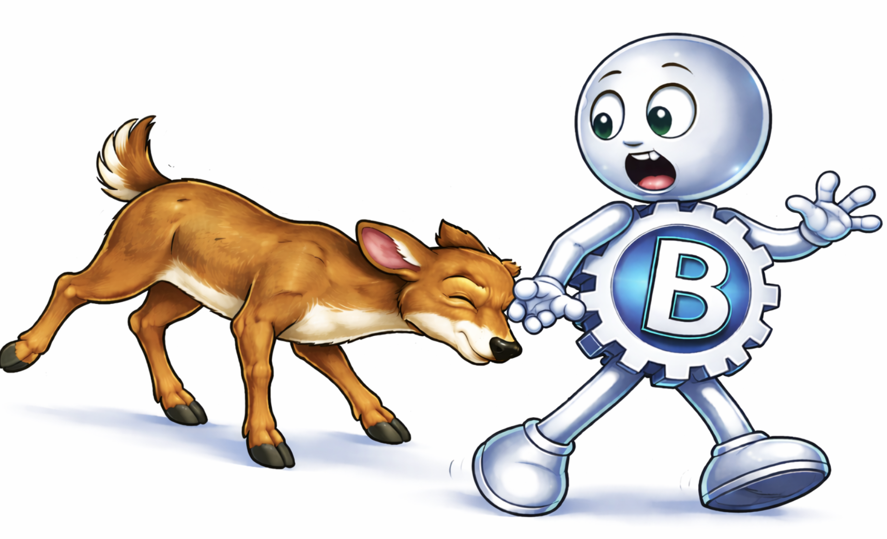
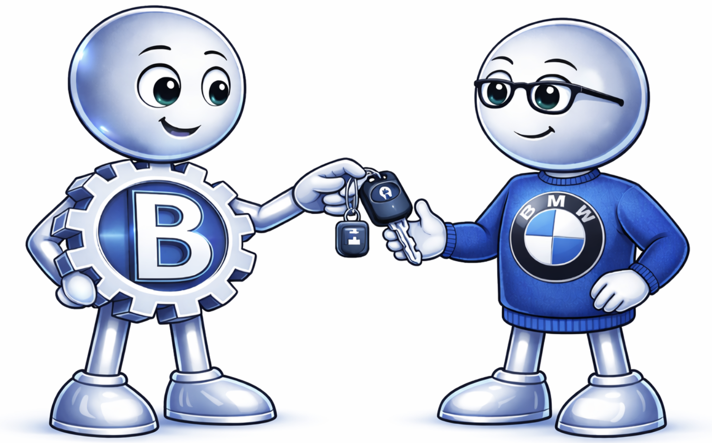
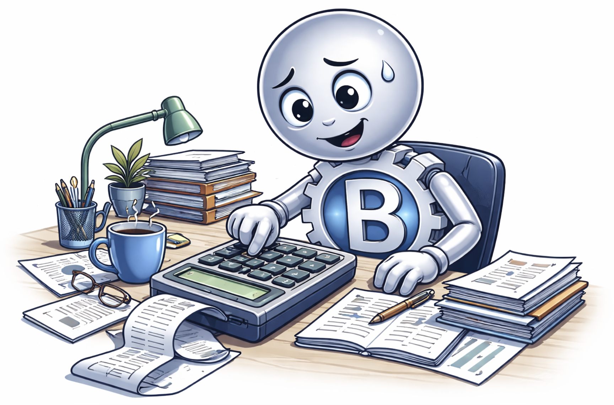

Ratgeber: Kfz-Gutachten, Regulierung und klare Hilfe nach dem Unfall
Praxisnahes Wissen für Geschädigte in Stuttgart und Umgebung: verständliche Antworten zu Gutachten, Versicherung und Regulierung – damit Sie nach einem Unfall fundiert entscheiden und finanzielle Nachteile vermeiden.
Aktuelle Beiträge
Kfz Gutachten nach Unfall: Inhalte und Nutzen
Verstehen Sie auf einen Blick, welche Inhalte im Gutachten entscheidend für Ihre vollständige Schadenregulierung sind.
Wann lohnt sich ein Unfallgutachten
Erfahren Sie schnell, ob ein Gutachten sinnvoller ist als ein Kostenvoranschlag und wann es Ihre Ansprüche absichert.
Versicherungsgutachter oder unabhängiger Gutachter?
Warum ein unabhängiges Gutachten oft der entscheidende Vorteil für eine faire und vollständige Regulierung ist.
Fiktive Abrechnung: verständlich erklärt
Die wichtigsten Grundlagen kompakt erklärt, damit Sie schnell entscheiden können, ob eine Auszahlung für Sie passt.
Wann lohnt sich die fiktive Abrechnung
So erkennen Sie, wann die fiktive Abrechnung finanziell sinnvoll ist und wie Sie typische Fehler vermeiden.
Versicherung kürzt nach Unfall? Diese Streitpunkte sind typisch
Typische Kürzungsversuche kurz erklärt, damit Sie Ansprüche gezielt prüfen und begründet widersprechen können.

Wildunfall: Was tun nach dem Zusammenstoß?
Diese Schritte helfen direkt nach dem Wildunfall, damit Dokumentation und Regulierung ohne unnötige Probleme laufen.

Kfz-Gutachten vor Leasingrückgabe
Sichern Sie sich vor der Rückgabe ab und vermeiden Sie unklare Nachforderungen mit einer unabhängigen Bewertung.
Wie lange dauert ein Gutachten
Ein realistischer Zeitplan zeigt Ihnen, wann Gutachten und Auszahlung typischerweise abgeschlossen sind.
Totalschaden – was bedeutet das
Verstehen Sie schnell die Berechnung beim Totalschaden und welche Auszahlung Ihnen dabei tatsächlich zusteht.
Bagatellschaden einfach erklärt
Ab wann ein Schaden als Bagatellschaden gilt und wann ein Gutachten dennoch wirtschaftlich sinnvoll sein kann.
Teilschuld – lohnt sich trotzdem ein Gutachten?
Warum ein Gutachten bei Teilschuld vor allem die Schadenhöhe als Grundlage der anteiligen Regulierung sauber festlegt.

Wertminderung nach Unfall
Auch nach fachgerechter Reparatur kann Ihr Fahrzeug an Marktwert verlieren. Erfahren Sie, wann Ihnen Wertminderung zusteht und wie ich sie im Gutachten berücksichtige.
Fachchinesisch? Hier das Glossar
Wichtige Fachbegriffe aus Gutachten und Regulierung kurz erklärt, damit Sie jedes Schreiben sicher einordnen können.

Rechner: Was zahlt die Versicherung?
Prüfen Sie schnell und verständlich, ob sich eine Reparatur in Ihrem Fall wirtschaftlich lohnt – inklusive 130%-Einordnung.